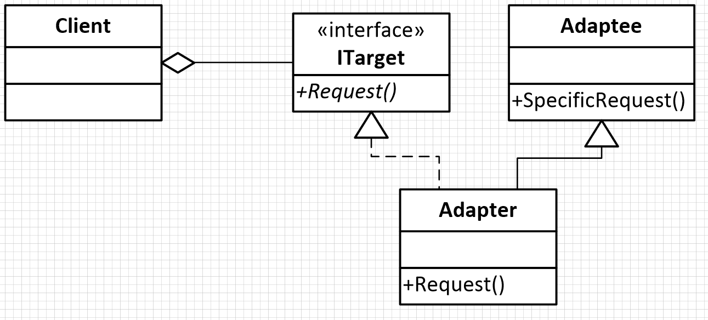
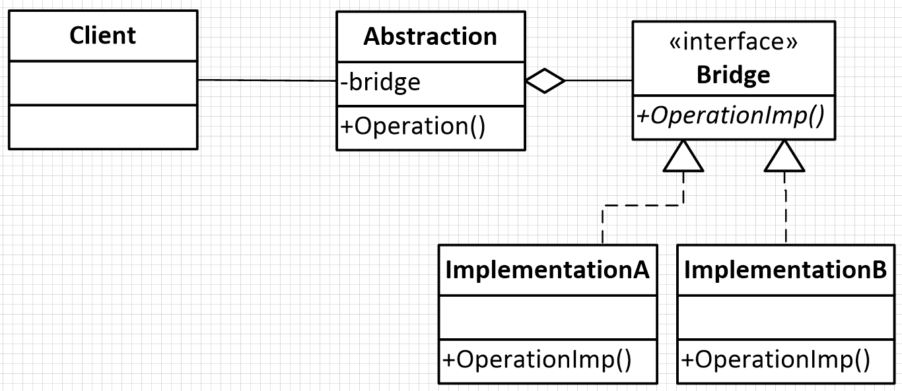

design patterns in action
www.gdgpardubice.cz
Úkol - výherce
TODO
Adaptér
Součástka navržená k propojení dvou „nekompatibilních“ zařízení
Co to je?
UML
Kde se používá?
Zachování zpětné kompatibility
Wrapper - obalová třída
Způsob komunikace
Změna rozhraní
Samozřejmě GUI :-) MouseAdapter, ...
Požadavky
Použití existující třídy s nekompatibilním rozhraním
Chceme změnit rozhraní třídy.
Nechceme přijít o kompatibilitu.
Jdeme kódit!
Shrnutí
Adapter slouží k zajištění propojenosti tříd, aby pracovaly v komplexním programu.
Je využíván, jestliže je nutné přizpůsobit chování již vytvořených tříd a zajistit jejich vzájemnou komunikaci bez nutnosti měnit existujících rozhraní.
Bridge
Bridge Pattern představuje problém oddělení rozhraní třídy od její vlastní implementace, aby obě tyto části mohly být vytvářeny nezávisle na sobě. Tento princip zajistí, že může být změněna implementace třídy bez toho, abychom měnili kód klienta.
Podobné jako Adapter - ale přichází do hry již v době návrhu.
Na co je?
UML
Kde se používá:
Služby aplikace
Práce s datovými zdroji
Multiplatformní GUI
...
Požadavky
Bridge navrhujeme již v době návrhu.
Abstrakci a implementaci lze nezávisle rozšiřovat.
Umožňuje měnit používanou implementaci dle potřeby.
Skrytí detailů implementace
Při změně implementace netřeba překompilovat klientský kód
Chceme sdílet implementaci mezi více objekty

Jdeme kódit!
Úkol
Rozhraní
IStorage (void save(Entity), Entity getEntityById(int))
Třídy
Entity (int getId(), String getName())
Persistor (void persist(Entity), Entity getEntityById(int))
ArrayStorage implements IStorage
ListStorage implements IStorage
Shrnutí
Odděluje rozhraní od konkrétní implementace.
Předchází nárůstu počtu tříd při přidávání implementací.
Použití v době návrhu.
Tričko?
Za úkol!
Zadání
Vytvořte ukázkový příklad, který využívá dnes ukázané návrhové vzory.
(Vytvořte vlastní implementaci vzorů.)
Autor nejrychleji odevzdané práce a autor nejlepší implementace bude odměněn.
Odevzdání: info@gdgpardubice.cz
Feedback
Prosím vyplňte krátký feedback:
gdgpardubice.cz/go/dpa2